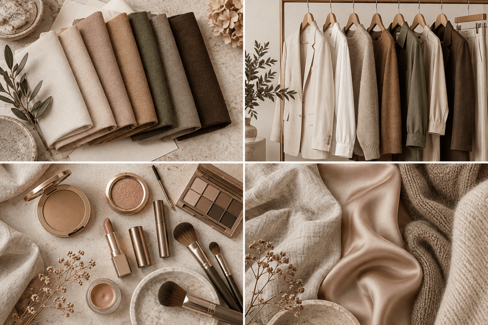
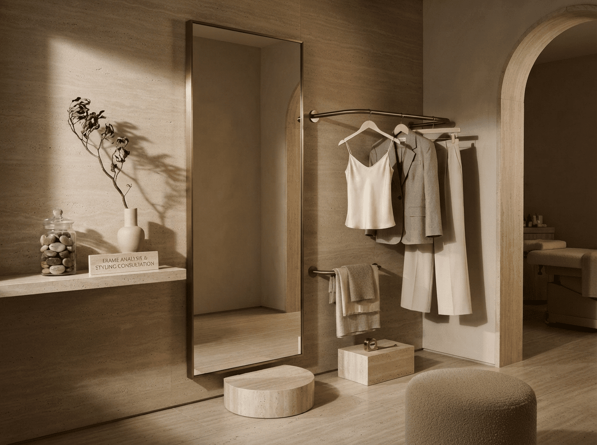
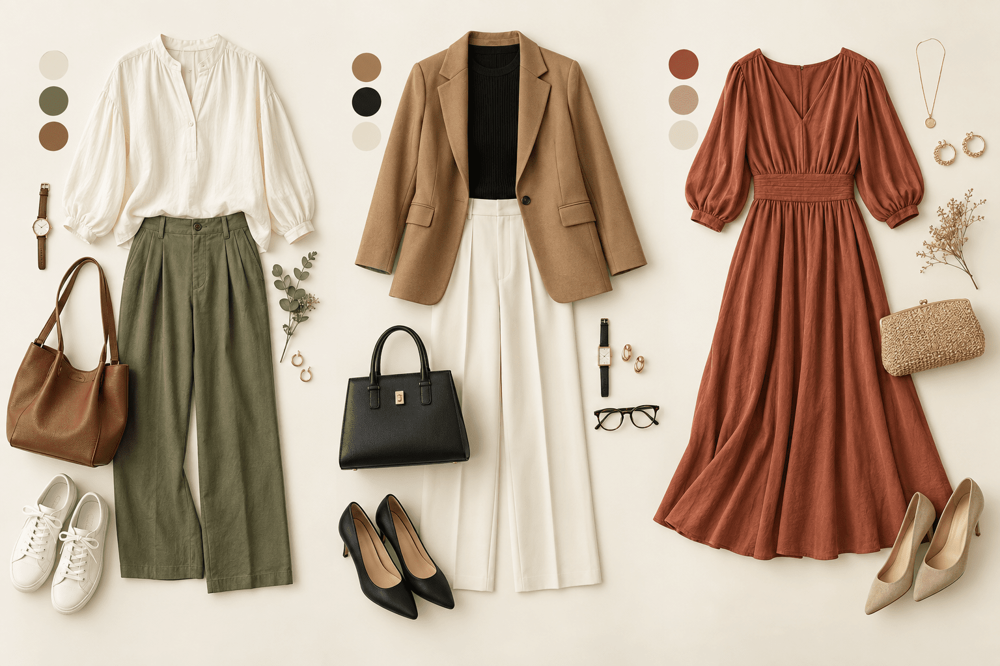

COLOR
似合う色で
肌がいきいきと、印象が明るく
TOTAL STYLING
似合うを知るだけでなく、毎日の装いまで迷わず決まる。
カラー・骨格・顔タイプ・メイクをつなぎ、あなたらしい「選ぶ基準」をつくります。
¥33,000 ／150分

カラー・骨格・顔立ちを丁寧にひも解き、あなたらしさが輝くトータルスタイルをご提案します。
OUR APPROACH
ファッション・カラー・メイク・質感の4つの視点から、
あなただけのスタイルレシピをつくります。

似合う色で
肌がいきいきと、印象が明るく
体のラインを美しく見せる
シルエットで、バランスよく
骨格・パーツ・肌トーンに合わせた
メイクで、より魅力的に
素材の質感で、
上品さや抜け感をコントロール
すべてを組み合わせてあなただけのスタイルに
STYLING BOARDS
カジュアル、仕事、特別な日。
診断結果を、実際に選べる3つのコーディネートへ落とし込みます。

BENEFITS
PERSONAL CONSULTATION
好みやライフスタイルを伺いながら、診断結果を無理なく日常へつなげます。
正解を押しつけるのではなく、好きと似合うが調和する場所を一緒に探します。
A STYLE MADE FOR YOU
服を選ぶたび、少し好きな自分に近づいていく。